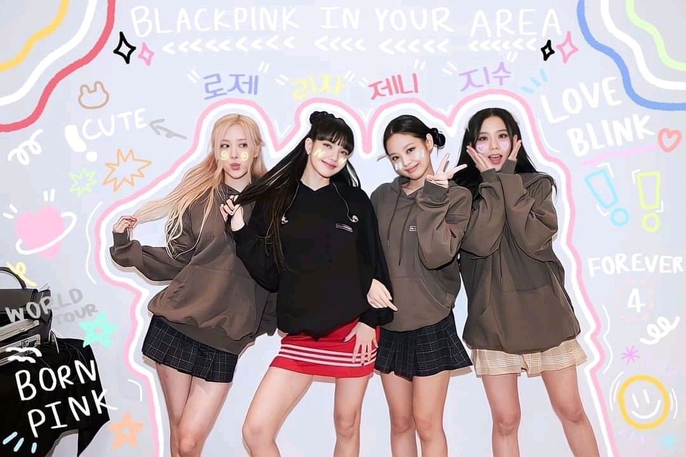

Biografia de Blackpink
Blackpink es una girlband coreana, formada por Jisoo , Jennie , Rosé y Lisa.
Blackpink se formó en 2009, cuando la discográfica YG Entertainment realizó un casting masivo para crear un nuevo grupo de chicas, después del gran éxito que había tenido 2NE1.
Las elegidas se prepararon para su debut en una academia tomando clases de danza, canto y composición. Este debut que inicialmente estaba fijado para 2011, se retrasaría hasta 2016. Entretanto, sus integrantes fueron promocionadas mediante su aparición en vídeos musicales de otros grupos de sello y duetos con artistas consolidados.
Jeannie, Rosé y Jisoo son coreanas, aunque la primera pasó su infancia en Nueva Zelanda, mientras que Lisa es medio tailandesa, medio suiza, convirtiéndose en la primera extranjera que llega a ser una estrella del K-Pop.
El lanzamiento del grupo fue precedido por varios téasers, vídeos y anuncios que crearon una gran expectación. Su disco, Square One, en agosto de ese año, con sus singles Boombayah y Whistle, escaló con rapidez las listas de éxitos asiáticas. En noviembre, a este le siguió su continuación, Square Two.
Al año, siguiente, su single As If It's Your Last se convirtió en el vídeo musical de un grupo de K-Pop más visto en las primeras veinticuatro horas de su lanzamiento, y el primero en superar mil millones de reproducciones. En 2018, crearon su propia programa de telerrealidad, Blackpink House. Ese mismo año, lanzó Ddu-Du Ddu-Du, con el que se introdujeron por primera vez en las listas europeas y de Estados Unidos, algo que repitieron con Forever Young, emprendiendo una gira mundial que las condujo por el continente americano, Europa, Oceanía y Asia. También colaboraron con Dua Lipa en Kiss and Make Up.
Su tercer álbum, Kill This Love, apareció en 2019. En 2020, participaron con la canción Sour Candy en el álbum Chromatica de Lady Gaga y en un nuevo reality, 24/365 with Blackpink. También colaboraron con Selena Gómez en el single Ice Cream. El 2 de octubre, se estrenó su nuevo disco, The Album que alcanzó el puesto número dos en las listas británicas y de Reino Unido, lo que las llevó a ser consideradas el grupo femenino de mayor éxito de la historia del K-Pop.
Netflix estrenó, en paralelo, el documental sobre el grupo Blackpink: Light Up the Sky. En 2021, le llegó el turno a su directo, The Show. La revista Rolling Stone las calificó como la tercera girlband más popular de la historia, tras Spice Girls y Destiny´s Child.
Sus integrantes se han convertido en imagen de marcas como Dior, Chanel, Yves Saint Laurent y Bulgari. También es el grupo en activo con un mayor número de seguidores en YouTube, más de setenta y cinco millones.
En 2022, se anunció se anunció un nuevo trabajo discográfico original, Born Pink, y una nueva gira mundial de presentación.
Blackpink: El estilo de cada una de sus integrantes
- Jisoo Kim
- Nacida en Corea del Sur, a Jisoo Kim, de 27 años, le gusta crear looks elegantes y muy femeninos, pero al mismo tiempo premia la comodidad, al momento de vestirse. Como embajadora de marca de Dior, no es de extrañar que la Directora Creativa de la firma, Maria Grazia Chiuri, le dedicara la colección Otoño-Invierno 2021. Además de llevar ropa de Dior, la cantante ama las piezas de Rokh, Amiri y Loewe.
- Jennie Kim
- No es ningún secreto que Jennie, de 26 años, está obsesionada con Chanel. Después de haber usado una enorme cantidad de piezas de la maison parisina, está claro que la cantante tiene una afición por el estilo francés. Ya sea en un día libre, o en la alfombra roja, Jennie ha sido vista con trajes en telas elegantes como tweed y bouclé, chaquetas de punto y minivestidos en consonancia con su estilo clásico. Dato curioso: Jennie está confirmada para aparecer en la próxima serie producida por The Weeknd, titulada The Idol, junto a Lily-Rose Depp.
- Rosé Park
- Rosé, de 25 años, tiene un don nato para crear looks elegantes. La estrella cuenta con una enorme colección de sudaderas con capucha, jeans de talle alto y camisetas recortadas. Cuando no está frente a la cámara su estilo es muy relajado. Pero, siempre fiel a ser una chica oficial de Saint Laurent, Rosé eleva siempre las cosas durante los eventos nocturnos. Su increíble momento bitono, cortesía de Anthony Vaccarello en la MET Gala de 2021 es un buen ejemplo de ello.
- Lisa Manoban
- Nacida y criada en Tailandia antes de mudarse a Corea del Sur, Lisa, de 25 años, es una de las musas de Hedi Slimane, además de embajadora de marca para Celine. Su estilo urbano combina grandes nombres (Acne Studios, Pray, Supreme y Celine, por supuesto). Pero cuando se trata de eveningwear, la estrella tiende a irse a los looks ultra-glam que simplemente nos dejan sin palabras.
Preguntas que muchos fans se hacen de Blackpink
- ¿Que le ocurrio a la quinta integrande de Blackpink?
- ¿Cuantas visitas tuvo "Lalisa", el primer single en solitario de Lisa de Blackpink?
- ¿Quien es la lider de Blackpink?
Otros artistas similares a Blackpink
- Stray Kids
- Monsta X
- BTS
- Enhypen
- Twice
si eseas saber mas sobre esta banda surcoreana puedes visitar su instagram oficial dando click en el siguiente enlace
https://www.instagram.com/blackpinkofficial/
